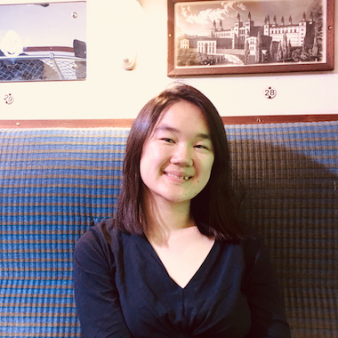

a little about me
Hi I'm Elizabeth! I am a rising senior Computer Science student at University of Washington Seattle looking for internships in
Software Engineering.
My past internship experiences at Microsoft, AppSheet (Google Cloud), and Edifecs have allowed me to be an adaptable team members and proactive problem solver.
My interests in data science and computing education have motivated me to become a teaching assistant for
a data programming class involving teaching introduction to Python to college students.
This summer, I founded the STEM League Developer Program to encourage and lead over 300+ students and 40+ mentors to
teach young students CS! I am very passionate about my personal projects and I am proud to be able to help students
learn at this challenging time.